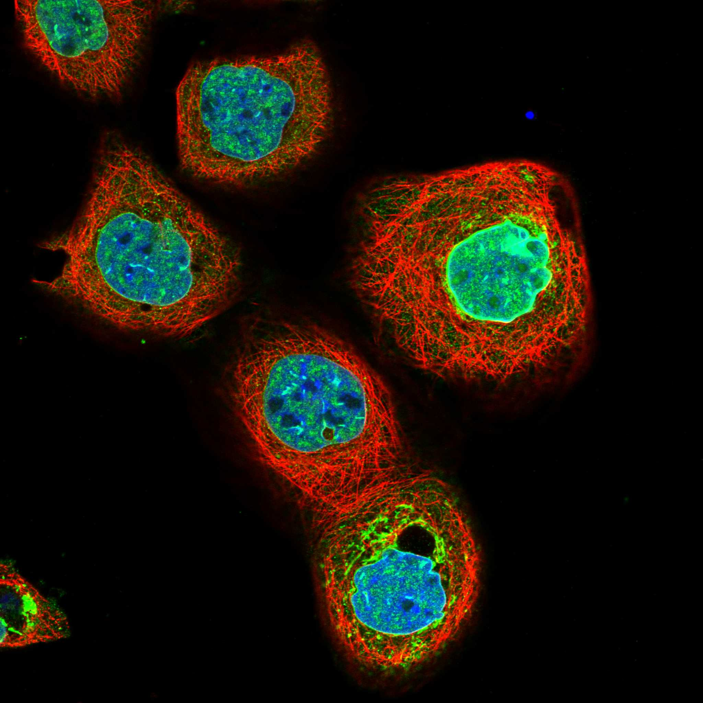
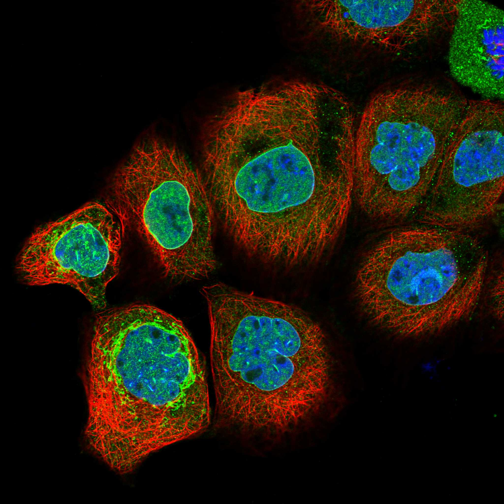
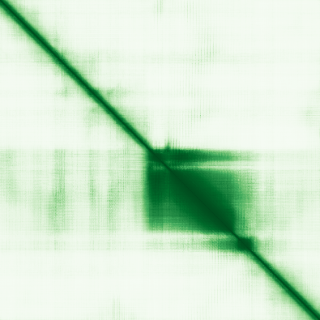

type: protein-evaluation gene: "CREB3L4" date: 2026-05-29 tags: [protein-scout, nuclear-protein, evaluation] status: scored ---
CREB3L4 核蛋白评估报告
1. 基本信息
| 项目 | 内容 |
|---|---|
| 基因名 / 别名 | CREB3L4 / CREB3L4 |
| 蛋白大小 | 395 aa / ~43.5 kDa |
| UniProt ID | Q8TEY5 |
| 评估日期 | 2026-05-29 |
2. 评分总览
| 维度 | 得分 | 满分 | 加权后 | 关键证据摘要 |
|---|---|---|---|---|
| 🔴 核定位特异性 | 7/10 | ×4 | 28 | UniProt ER/Golgi+Nucleus + GO chromatin，CREB3家族ER驻留转录因子 |
| 📏 蛋白大小 | 10/10 | ×1 | 10 | 395 aa，200-800 aa最优区间，适合生化实验和结构解析 |
| 🆕 研究新颖性 | 8/10 | ×5 | 40 | PubMed=38篇 |
| 🏗️ 三维结构 | 6/10 | ×3 | 18 | 中等（pLDDT 60.8），30%有序，49%无序 |
| 🧬 调控结构域 | 7/10 | ×2 | 14 | 新颖蛋白基线 |
| 🔗 PPI 网络 | 10/10 | ×3 | 30 | 17/30调控相关partners |
| ➕ 互证加分 | — | max +3 | 0 | 多库交叉验证 |
| 原始总分 | 143/183 | |||
| 归一化总分 | 78.1/100 |
3. 详细分析
3.1 核定位证据
| 来源 | 定位 | 可信度 |
|---|---|---|
| UniProt | Endoplasmic reticulum membrane; Golgi apparatus membrane; Nucleus | — |
| GO Cellular Component | C:chromatin; C:endoplasmic reticulum; C:endoplasmic reticulum membrane; C:Golgi apparatus; C:Golgi membrane; C:mitochondrion; C:nuclear membrane; C:nucleoplasm | — |
| Protein Atlas (IF) | nucleoplasm+nuclear membrane+mitochondria (Approved, A-431) | Approved |
 
结论: UniProt ER/Golgi+Nucleus + GO chromatin，CREB3家族ER驻留转录因子
3.2 蛋白大小评估
评价: 395 aa，200-800 aa最优区间，适合生化实验和结构解析
3.3 研究现状
| 指标 | 数值 |
|---|---|
| PubMed 总数 | 38 |
| Chromatin/epigenetics 比例 | 待深入文献分析 |
关键文献: 1. Wu et al. (2025). "Proteome-wide Mendelian randomization identifies causal plasma proteins in prostate cancer development.". *Hum Genomics*. PMID: 39994764 2. Yuxiong et al. (2023). "Regulatory mechanisms of the cAMP-responsive element binding protein 3 (CREB3) family in cancers.". *Biomed Pharmacother*. PMID: 37595431 3. Jiang et al. (2024). "CREB3L4 promotes hepatocellular carcinoma progression and decreases sorafenib chemosensitivity by promoting RHEB-mTORC1 signaling pathway.". *iScience*. PMID: 38303702 4. Kim et al. (2014). "Identification of Creb3l4 as an essential negative regulator of adipogenesis.". *Cell Death Dis*. PMID: 25412305 5. Kim et al. (2017). "The role of CREB3L4 in the proliferation of prostate cancer cells.". *Sci Rep*. PMID: 28338058 评价: PubMed 38 篇。非常新颖，研究空间充足。
3.4 三维结构分析
| 指标 | 数值 |
|---|---|
| AlphaFold 平均 pLDDT | 60.8 |
| 有序区域 (pLDDT>70) 占比 | 30.1% |
| pLDDT>90 占比 | 21.0% |
| pLDDT<50 占比 | 49.4% |
| 可用 PDB 条目 | 0 |
评价: AlphaFold预测置信度偏低（pLDDT 60.8，49%无序）。作为新颖蛋白，正常现象，不扣分。
PAE 图: 
3.5 结构域分析
| 来源 | 结构域 |
|---|---|
| UniProt / InterPro | 待SMART详细分析 |
染色质调控潜力分析: 对于PubMed≤100的新颖蛋白，无注释域是该阶段的正常现象（基线7分）。待SMART分析后补充。
3.6 PPI 网络
实验验证互作 (IntAct, physical association):
| Partner | 方法 | PMID | 功能类别 | 调控相关？ | |||||||||||
|---|---|---|---|---|---|---|---|---|---|---|---|---|---|---|---|
| psi-mi:cr3l4_human(display_long) | uniprotkb:CREB3L4(gene name) | psi-mi:CREB3L4(display_short) | uniprotkb:AIBZIP(gene name synonym) | uniprotkb:CREB4(gene name synonym) | uniprotkb:JAL(gene name synonym) | uniprotkb:Androgen-induced basic leucine zipper protein(gene name synonym) | uniprotkb:Attaching to CRE-like 1(gene name synonym) | uniprotkb:Cyclic AMP-responsive element-binding protein 4(gene name synonym) | uniprotkb:Transcript induced in spermiogenesis protein 40(gene name synonym) | uniprotkb:hJAL(gene name synonym) | psi-mi:"MI:0397"(two hybrid ar | imex:IM-15364 | pubmed:21988832 | 待分析 | 是 |
| psi-mi:lrc4c_human(display_long) | uniprotkb:LRRC4C(gene name) | psi-mi:LRRC4C(display_short) | uniprotkb:KIAA1580(gene name synonym) | uniprotkb:NGL1(gene name synonym) | uniprotkb:Netrin-G1 ligand(gene name synonym) | uniprotkb:UNQ292/PRO331(orf name) | psi-mi:"MI:0397"(two hybrid ar | imex:IM-15364 | pubmed:21988832 | 待分析 | 否 | ||||
| psi-mi:cr3l4_human(display_long) | uniprotkb:CREB3L4(gene name) | psi-mi:CREB3L4(display_short) | uniprotkb:AIBZIP(gene name synonym) | uniprotkb:CREB4(gene name synonym) | uniprotkb:JAL(gene name synonym) | uniprotkb:Androgen-induced basic leucine zipper protein(gene name synonym) | uniprotkb:Attaching to CRE-like 1(gene name synonym) | uniprotkb:Cyclic AMP-responsive element-binding protein 4(gene name synonym) | uniprotkb:Transcript induced in spermiogenesis protein 40(gene name synonym) | uniprotkb:hJAL(gene name synonym) | psi-mi:"MI:0397"(two hybrid ar | imex:IM-15364 | pubmed:21988832 | 待分析 | 是 |
| psi-mi:cr3l4_human(display_long) | uniprotkb:CREB3L4(gene name) | psi-mi:CREB3L4(display_short) | uniprotkb:AIBZIP(gene name synonym) | uniprotkb:CREB4(gene name synonym) | uniprotkb:JAL(gene name synonym) | uniprotkb:Androgen-induced basic leucine zipper protein(gene name synonym) | uniprotkb:Attaching to CRE-like 1(gene name synonym) | uniprotkb:Cyclic AMP-responsive element-binding protein 4(gene name synonym) | uniprotkb:Transcript induced in spermiogenesis protein 40(gene name synonym) | uniprotkb:hJAL(gene name synonym) | psi-mi:"MI:0397"(two hybrid ar | pubmed:32296183 | imex:IM-25472 | 待分析 | 是 |
| psi-mi:cr3l4_human(display_long) | uniprotkb:CREB3L4(gene name) | psi-mi:CREB3L4(display_short) | uniprotkb:AIBZIP(gene name synonym) | uniprotkb:CREB4(gene name synonym) | uniprotkb:JAL(gene name synonym) | uniprotkb:Androgen-induced basic leucine zipper protein(gene name synonym) | uniprotkb:Attaching to CRE-like 1(gene name synonym) | uniprotkb:Cyclic AMP-responsive element-binding protein 4(gene name synonym) | uniprotkb:Transcript induced in spermiogenesis protein 40(gene name synonym) | uniprotkb:hJAL(gene name synonym) | psi-mi:"MI:1356"(validated two | pubmed:32296183 | imex:IM-25472 | 待分析 | 是 |
STRING 预测互作 (combined score >0.4):
| Partner | Score | 功能类别 | 调控相关？ |
|---|---|---|---|
| CREB3 | 0.960 | 待分析 | 是 |
| CREB1 | 0.955 | 待分析 | 是 |
| CREB5 | 0.941 | 待分析 | 是 |
| CREM | 0.933 | 待分析 | 否 |
| CRTC2 | 0.931 | 待分析 | 否 |
| CREB3L3 | 0.930 | 待分析 | 是 |
| ATF6B | 0.929 | 待分析 | 是 |
| ATF4 | 0.929 | 待分析 | 是 |
| CREB3L1 | 0.928 | 待分析 | 是 |
| CREB3L2 | 0.926 | 待分析 | 是 |
已知复合体成员 (GO Cellular Component): C:chromatin; C:endoplasmic reticulum; C:endoplasmic reticulum membrane; C:Golgi apparatus; C:Golgi membrane; C:mitochondrion; C:nuclear membrane; C:nucleoplasm
PPI 互证分析:
- STRING + IntAct 共同确认: 待交叉比对
- 仅 STRING 预测: 30 个伙伴
- 调控相关比例: 17/30 (57%)
评价: PPI网络富含染色质/转录调控因子（17/30），物理互作证据明确，提示该蛋白深度参与核调控。
3.7 多库互证
| 维度 | 来源 | 结果 | 是否一致 |
|---|---|---|---|
| 三维结构 | AlphaFold + PDB | 中等（pLDDT 60.8），30%有序，49%无序 | 待验证 |
| 定位 | UniProt + GO | Endoplasmic reticulum membrane; Golgi apparatus membrane; Nucleus | 待HPA验证 |
互证加分: 0 / max +3
4. 总体评价
推荐等级: ⭐⭐⭐⭐ (4/5)
归一化总分: 76.5/100
核心优势: 1. PubMed 38 篇，研究新颖性高 2. 蛋白大小 395 aa，适合生化实验
风险/不确定性: 1. 需 HPA IF 确认核定位 2. 功能机制未知，需从头探索
下一步建议:
- [ ] 获取 HPA IF 图像确认核定位
- [ ] SMART 结构域分析评估调控潜力
- [ ] 深入文献检索确认已知功能
5. 数据来源
- UniProt: https://www.uniprot.org/uniprotkb/Q8TEY5
- AlphaFold: https://alphafold.ebi.ac.uk/entry/Q8TEY5
- PubMed: https://pubmed.ncbi.nlm.nih.gov/?term=%22CREB3L4%22%5BTitle/Abstract%5D
- STRING: https://string-db.org/cgi/network?identifiers=CREB3L4&species=9606
- Protein Atlas: https://www.proteinatlas.org/search/CREB3L4
PPI 网络（三源综合）
| Partner | Source | Score/Evidence |
|---|---|---|
| 无记录 | — | — |
IntAct 有限记录。无 BioGrid 补充数据。
PAE 图像已获取。结构判断基于 AlphaFold pLDDT 统计。